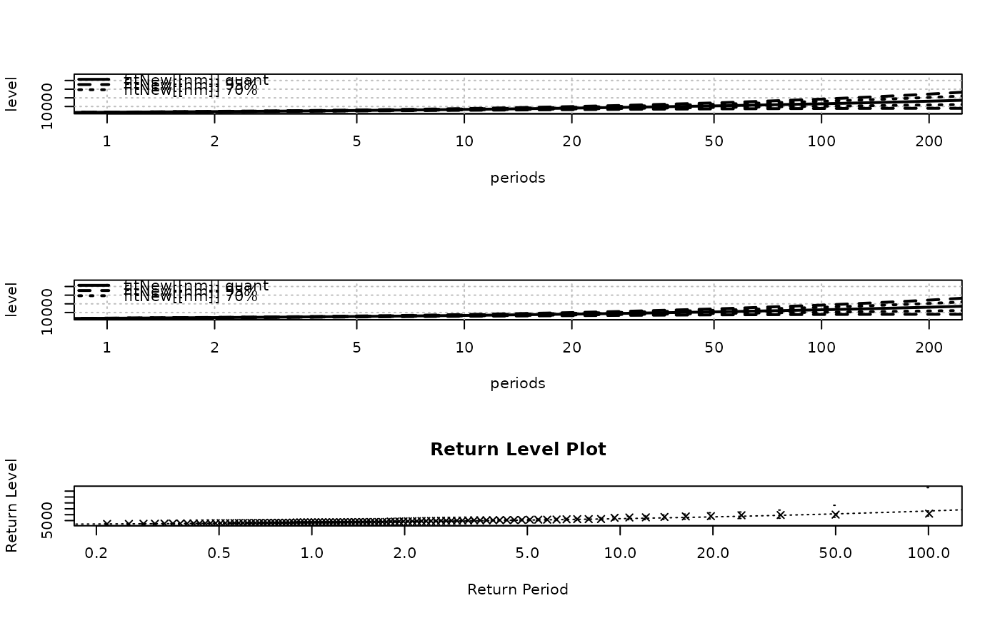
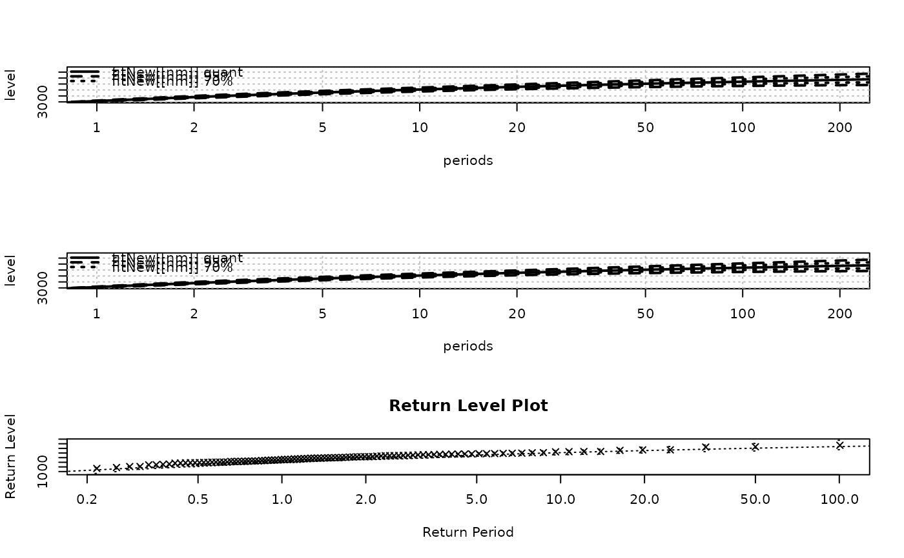

Translate a vector of GEV parameters into renewal model
gev2Ren.RdTranslate a (named) vector of GEV parameters into a renewal model.
Usage
gev2Ren(parGev,
threshold = NULL,
lambda = NULL,
w = 1,
distname.y = c("gpd", "GPD", "lomax", "maxlo"),
vcovGev = NULL,
jacobian = TRUE,
plot = FALSE)Arguments
- parGev
-
Named vector of GEV coefficients. This must be a vector of length 3, with names
"loc","scale"and"shape". - threshold
-
The threshold of the renewal model.
- lambda
-
The rate of the renewal model.
- w
-
The duration corresponding to the GEV parameters. Positive numeric scalar assumed to be in years.
- distname.y
-
The name of the distributions for the excesses in the renewal model.
- vcovGev
-
A (co)variance matrix for the parameter. This must be a symmetric positive matrix with 3 rows and 3 columns, with rownames in correspondence with the parameter names.
- jacobian
-
Logical. If
TRUEa Jacobian matrix will be returned as a"jacobian"attribute of the result. - plot
-
If
TRUEa rough plot will be produced to check the accordance of the GEV and the renewal models. It is a return level plot with the two return level curves shown.
Value
A vector of parameters similar to the coefficient vector of an object
with class "Renouv". This vector has an element named
"lambda" corresponding to the rate of the Homogeneous Poisson
Process. The other elements are the parameters for the distribution
of POT excesses.
The result has attributes named "distname.y" and
"threshold" which can be used to build a Renouv object
using the RenouvNoEst function. The result may as well
have attributes "jacobian" and "vcov" according to the
arguments values. These objects should be used with attention to their
element names, since the parameter order may not be the one you
expect.
See also
The Ren2gev function provide a reciprocal
transformation.
Examples
## GEV parameters and block duration
set.seed(1234)
muGev <- rnorm(1); sigmaGev <- rgamma(1, shape = 5)
xiGev <- runif(1, min = -0.2, max = 0.3)
parGev <- c("loc" = muGev, "scale" = sigmaGev, "shape" = xiGev)
parRen <- gev2Ren(parGev, lambda = 1, jacobian = TRUE, plot = TRUE)
## check by reverse transform
parGevCheck <- Ren2gev(parRen, threshold = attr(parRen, "threshold"))
rbind(parGev, parGevCheck)
#> loc scale shape
#> parGev -1.207066 5.107758 0.2304577
#> parGevCheck -1.207066 5.107758 0.2304577
##=======================================================================
## slightly positive shape convert to "gpd" and "lomax" distributions
##=======================================================================
x <- rgev(n = 100, loc = 3500, scale = 1000, shape = 0.1)
fit.gev <- fgev(x, start = list("loc" = 3000, "scale" = 1000, "shape" = 0.1))
#> Warning: optimization may not have succeeded
distNames <- c("gpd", "lomax")
namesRen <- c("lambda", "scale", "shape") # works for the 2 target dists
fitNew <- list()
opar <- par(mfrow = c(3, 1))
for (nm in distNames) {
parRen <- gev2Ren(parGev = fit.gev$estimate, threshold = 2800,
vcov = fit.gev$var.cov, distname.y = nm)
namesRen <- c("lambda", "scale", "shape")
myVcov <- attr(parRen, "vcov")[namesRen, namesRen]
fitNew[[nm]] <- RenouvNoEst(threshold = attr(parRen, "threshold"),
estimate = parRen,
distname.y = attr(parRen, "distname.y"),
cov = myVcov)
plot(fitNew[[nm]], Tlim = c(1, 200))
}
plot(fit.gev, which = 4)

par(opar)
##=======================================================================
## slightly negative shape convert to "gpd" and "maxlo" distribution
##=======================================================================
x <- rgev(n = 100, loc = 3500, scale = 1000, shape = -0.2)
fit.gev <- fgev(x, start = list("loc" = 3000, "scale" = 1000, "shape" = 0.1))
#> Warning: optimization may not have succeeded
distNames <- c("gpd", "maxlo")
namesRen <- c("lambda", "scale", "shape") # works for the 2 target dists
fitNew <- list()
opar <- par(mfrow = c(3, 1))
for (nm in distNames) {
parRen <- gev2Ren(parGev = fit.gev$estimate, threshold = 2800,
vcov = fit.gev$var.cov, distname.y = nm)
myVcov <- attr(parRen, "vcov")[namesRen, namesRen]
fitNew[[nm]] <- RenouvNoEst(threshold = attr(parRen, "threshold"),
estimate = parRen,
distname.y = attr(parRen, "distname.y"),
cov = myVcov)
plot(fitNew[[nm]], Tlim = c(1, 200))
}
plot(fit.gev, which = 4)

par(opar)